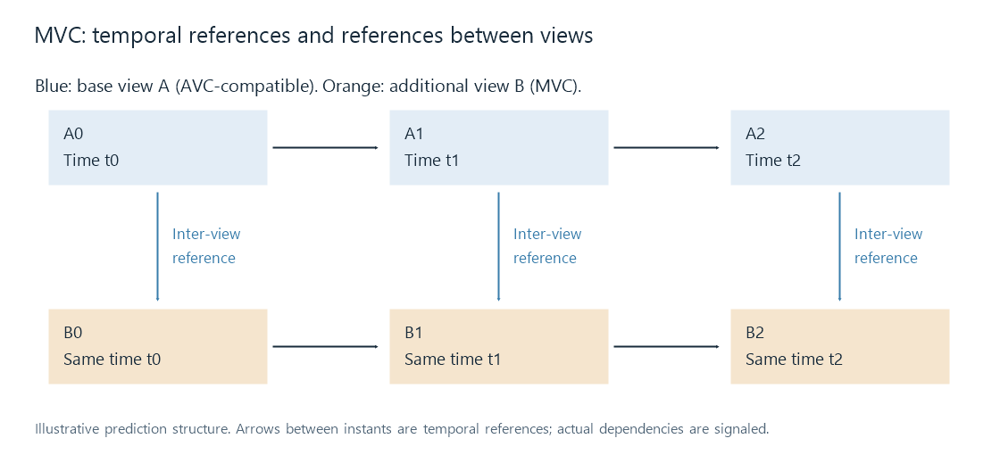

Multiview Video Coding (MVC)
MVC extends H.264/AVC to encode related camera views with temporal and inter-view prediction while retaining an AVC-compatible base view.
The left and right pictures of a stereo pair often contain much of the same scene. Encoding them entirely independently repeats some of that information. Multiview Video Coding, or MVC, extends H.264/AVC so a view can use reconstructed information from another view as a prediction reference.
The representation retains an AVC-compatible base view. An additional view can use both its own temporal references and permitted references from other views. For a stereo movie, those two reconstructed viewpoints supply the eye pair; MVC's general multiview tools also cover representations with more than two views.
MVC is used by Blu-ray 3D. Its role is to reconstruct the views from compressed data. HDMI frame packing describes a possible subsequent display output, after the views have been recovered.
Prediction across time and across viewpoints
Ordinary H.264 prediction can use previously reconstructed reference pictures to predict a new block. A temporal prediction describes how scene content changes across instants.
Inter-view prediction instead uses another camera's reconstructed picture. Corresponding scene regions appear at different image positions because of camera geometry, so locating the prediction can include a displacement between the viewpoints. The encoder still needs to describe changes that the reference cannot predict.

A and B identify views in this chosen reference structure. The blue arrows use a reconstructed base-view picture for the additional view at the corresponding instant. Actual references and picture types are described by the bitstream.
Using a reference does not replace the additional view with a duplicate of the base. It provides a starting estimate, which the decoder corrects to produce the additional viewpoint.
Reconstructing one small predicted block
Take a toy decoded base-view sample row:
10, 20, 50, 80, 90, 100.
Suppose the signaled correspondence selects the four-position prediction 20, 50, 80, 90 for a block in the additional view. After the codec's residual reconstruction, let its decoded corrections be 0, −5, +2, +5.
| Position | Prediction | Decoded correction | Reconstructed additional-view value |
|---|---|---|---|
| 0 | 20 | 0 | 20 |
| 1 | 50 | −5 | 45 |
| 2 | 80 | +2 | 82 |
| 3 | 90 | +5 | 95 |
The new block becomes 20, 45, 82, 95. Both the selected reference and the correction matter. The correction alone is not a complete eye picture, and the base block alone is not the intended other viewpoint.
This arithmetic isolates decoded sample reconstruction. The compressed syntax can describe prediction modes, reference choices, displacement, transforms, and quantized corrections; it does not simply store the four raw numbers in the table.
At occlusions, one camera sees regions hidden from another. Those regions need information beyond the corresponding base samples. The encoder can select other permitted predictions or supply the necessary coded correction. This is why similar views create a compression opportunity without making one viewpoint fully determined by the other.
Why an ordinary AVC path can show a 2D movie
The base-view portion is designed for compatible single-view AVC decoding. A suitable non-MVC decoder can reconstruct that view without performing the additional multiview reconstruction. Its output can therefore look like a normal 2D movie rather than a side-by-side frame.
An MVC-aware decoder recovers the requested view set while honoring its dependencies. If the additional view references the base, extracting its coded data does not make it independently decodable. The relevant base reference content and configuration remain part of the required reconstruction.
Base-view compatibility is also distinct from which eye is intended for that view. The stream's view description and stereo association establish eye identity. A default 2D presentation of the base and a correctly assigned stereo pair are different outputs from related source data.
For an Emby session, 3D identification describes the source category in the library. The practical playback trace then asks which view data reached the decoder, which views were reconstructed, and how the app presented them. A clear single image, a decoded two-view pair, and a correctly signaled 3D output each establish a different stage of that trace.
Seeking needs the relevant reference history
A seek to a presentation time may require earlier reference pictures in one or both view timelines. The decoder has to establish the state needed by the requested pictures, including applicable references between views.
The GOP and reference discussion explains why presentation order alone does not describe that state. MVC adds view relationships to the temporal dependency problem. A random-access point and the source's signaled dependencies determine where a complete requested pair can be reconstructed reliably.
A conversion makes an explicit view choice
Once both views are reconstructed, a converter can encode side-by-side or top-and-bottom output. It chooses the per-view resolution, frame arrangement, eye order, and output coding. A half-width packed output has a different sample allocation from the full-resolution views used as its input.
A 2D conversion instead selects a single reconstructed view and encodes or otherwise delivers that version. Repackaging the MVC-coded material can preserve its coding dependencies, but it does not turn it into an ordinary independent two-track movie without changing the representation.
See Also
- H.264 / AVC Video
- How Stereoscopic Video Works
- MV-HEVC and Spatial Video
- Frame-Packed 3D Video
- Blu-ray File Structure